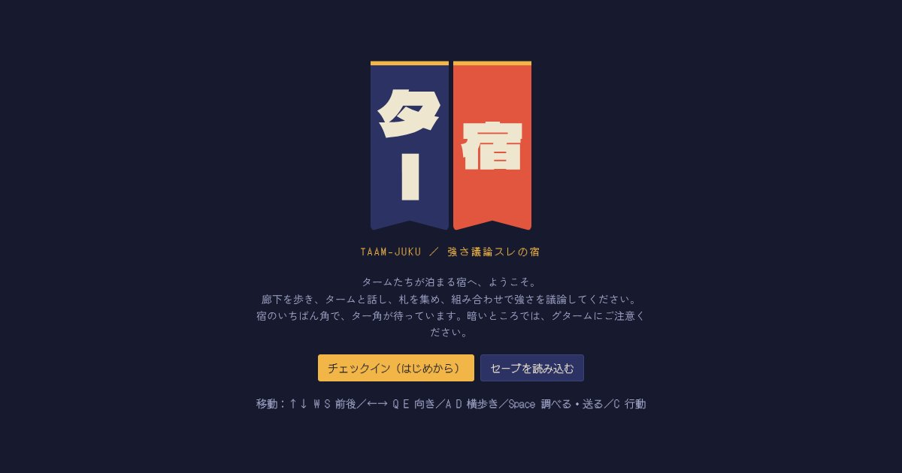
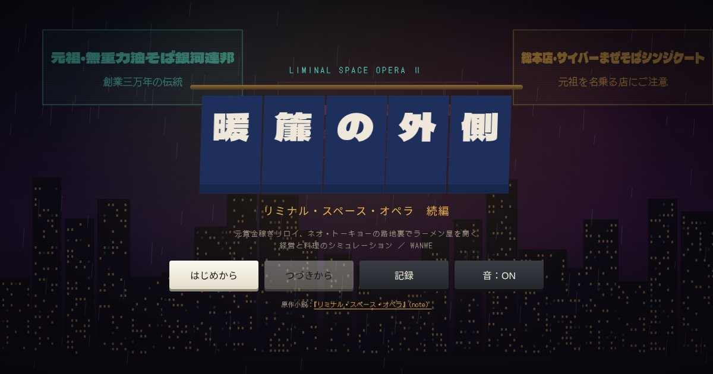

AIと一緒に作ったブラウザゲームを置いています。インストール不要で、そのまま遊べます。

TAAM-JUKU 強さ議論スレの宿
タームたちが泊まる宿へようこそ。廊下を歩き、タームと話して札を集め、組み合わせで強さを議論する。3つの座敷を取り合うカードバトルと、宿の探索のゲーム。
探索、カードバトルPC / スマホ

リミナル・スペース・オペラ 続編
元賞金稼ぎリロイが、ネオ・トーキョーの路地裏でラーメン屋を開く。具材を選んで一杯を組み立て、値段を決めて店を回す、経営と料理のシミュレーション。
シミュレーションPC / スマホ